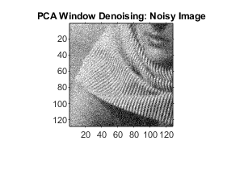
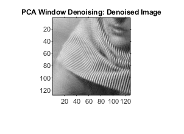
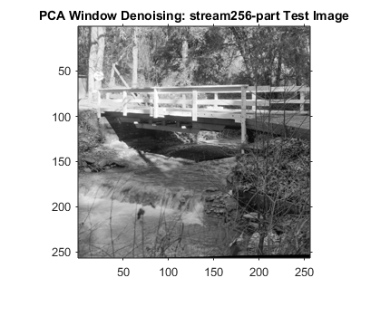
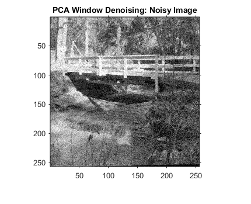
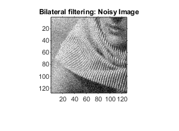
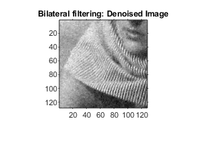
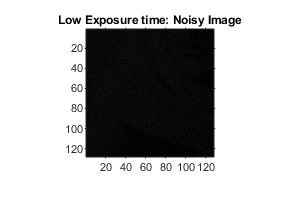
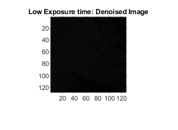

Contents
MyMainScript
tic;
Your code here
im = imread('../data/barbara256-part.png');
im = double(im);
im1 = im + randn(size(im))*20;
im2 = myPCADenoising1(im1);
RMSE_1 = norm((im2-im))/norm(im);
disp('RMSE is found to be :');
disp(RMSE_1);
figure,imshow(uint8(im));
title('PCA Global Denoising: barbara256-part Test Image');
figure,imshow(uint8(im1));
title('PCA Global Denoising: Noisy Image');
figure,imshow(uint8(im2));
title('PCA Global Denoising: Denoised Image');
im3 = myPCADenoising2(im1,400);
RMSE_2 = norm((im3-im))/norm(im);
disp('RMSE is found to be :');
disp(RMSE_2);
figure,imshow(uint8(im));
title('PCA Window Denoising: barbara256-part Test Image');
figure,imshow(uint8(im1));
title('PCA Window Denoising: Noisy Image');
figure,imshow(uint8(im3));
title('PCA Window Denoising: Denoised Image');
im_b = imread('../data/stream.png');
im_b = double(im_b);
im_b = imresize(im_b,0.5);
im1_b = im_b + randn(size(im_b))*20;
im3_b = myPCADenoising2(im1_b,400);
RMSE_2_b = norm((im3_b-im_b))/norm(im_b);
disp('RMSE is found to be :');
disp(RMSE_2_b);
figure,imshow(uint8(im_b));
title('PCA Window Denoising: stream256-part Test Image');
figure,imshow(uint8(im1_b));
title('PCA Window Denoising: Noisy Image');
figure,imshow(uint8(im3_b));
title('PCA Window Denoising: Denoised Image');
sigd=0.8;
sigi=45;
im4=myBilateralFiltering(im1,im,sigd,sigi);
RMSE_3 = norm((im4-im))/norm(im);
disp('RMSE is found to be :');
disp(RMSE_3);
figure,imshow(uint8(im));
title('Bilateral filtering: barbara256-part Test Image');
figure,imshow(uint8(im1));
title('Bilateral filtering: Noisy Image');
figure,imshow(im4);
title('Bilateral filtering: Denoised Image');
image_1_a = poissrnd(im);
image_1 = image_1_a + 0.375;
image_1 = sqrt(image_1);
image_2 = myPCADenoising2(image_1,0.0625);
image_2 = image_2.^2;
image_2 = image_2 - 0.375;
RMSE_4_a = norm((image_2-im))/norm(im);
disp('RMSE is found to be :');
disp(RMSE_4_a);
figure,imshow(uint8(image_1_a));
title('Sufficient Exposure time: Noisy Image');
figure,imshow(uint8(image_2));
title('Sufficient Exposure time: Denoised Image');
image_3_a = poissrnd(im/20);
image_3 = image_3_a + 0.375;
image_3 = sqrt(image_3);
image_4 = myPCADenoising2(image_3,0.0625);
image_4 = image_4.^2;
image_4 = image_4 - 0.375;
RMSE_4_b = norm((image_4-(im/20)))/norm(im/20);
disp('RMSE is found to be :');
disp(RMSE_4_b);
figure,imshow(uint8(image_3_a));
title('Low Exposure time: Noisy Image');
figure,imshow(uint8(image_4));
title('Low Exposure time: Denoised Image');
toc;
RMSE is found to be :
0.0147
RMSE is found to be :
0.0114
RMSE is found to be :
0.0140
RMSE is found to be :
0.9963
RMSE is found to be :
0.0112
RMSE is found to be :
0.0455
Elapsed time is 235.877181 seconds.
       